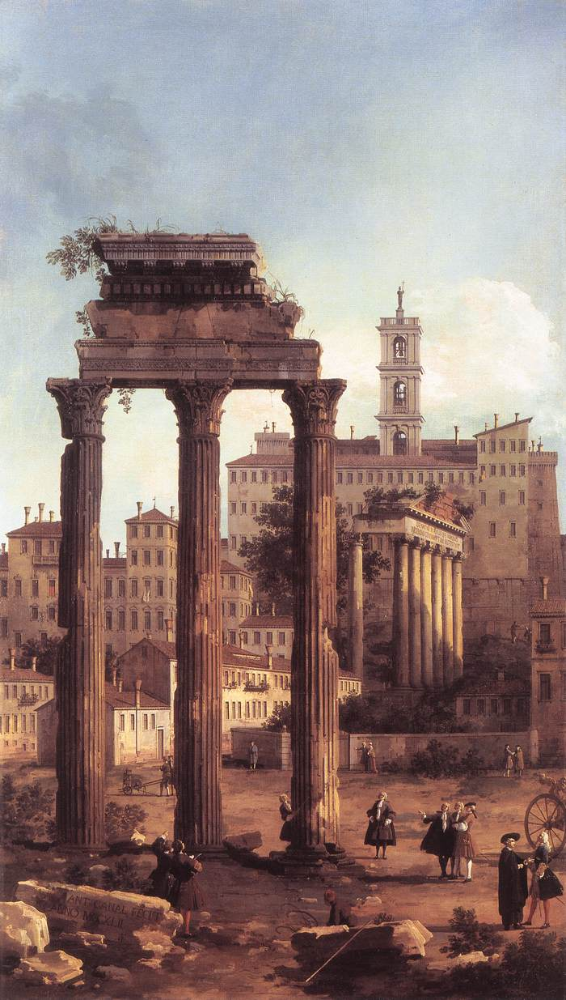
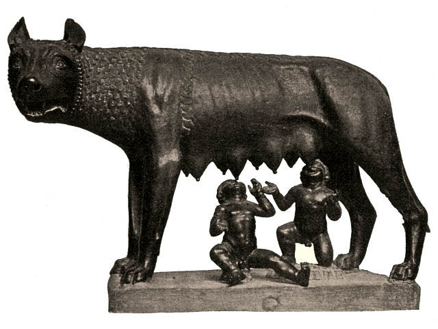

The city of Rome originates as a village of the Latini in the 8th century BC. At first ruled by kings, the Roman Republic is established in 509 BC. During the 5th century BC, Rome gained regional dominance in Latium, and eventually the entire Italian peninsula by the 3rd century BC. The population of the city at this point is estimated at about 300,000 people.
With the Punic Wars, Rome gained dominance over the Mediterranean. Soon, Ancient Rome would displace Hellenistic Greece as the dominant world power, with the city of Rome as its capital and most dominant city for the next five centuries. After Julius Caesar's conquest of Gaul, followed by a period of civil war, the Roman Empire was established under Octavian in 27 BC. The city of Rome now surpassed a population of one million,likely the first city in history to reach this size (compared to world population of about 200–300 million at the time).
At the peak of Roman imperial power in the 2nd century, the population of the city numbered some 1.6 million, a size it would never attain again until its becoming the capital of the Republic of Italy in 1946; close to 3% of the population of the empire lived within its limits. Following the Crisis of the Third Century and the transfer of the imperial capital to Constantinople in AD 330, Rome entered a period of gradual decline.
 After the collapse of the Western Roman Empire, Rome managed to hang on to the empire, still known as the Roman empire but long centered on the eastern Mediterranean, until the 8th century as the Duchy of Rome. But the city was reduced to a fraction of its former size, being sacked several times in the 5th to 6th centuries, in 546 even temporarily depopulated entirely. With the final loss of imperial control in Italy, Rome became the capital of the Papal States in medieval Italy. Papacy struggled to retain influence in the emerging Holy Roman Empire, and during the Saeculum obscurum, the population of Rome fell to as low as 30,000 inhabitants. Following the East–West Schism and the limited success in the Investiture Controversy, the Papacy did gain considerable influence in high medieval Europe, but with the Avignon Papacy and the Western Schism, the city of Rome was reduced to irrelevance, its population falling below 20,000.
Rome's decline into complete irrelevance during the medieval period, with the associated lack of construction activity, assured the survival of very significant ancient Roman material remains in the centre of the city, some abandoned and others continuing in use. Rome began to recover some importance in the late 15th and 16th century, The Sistine Chapel was restored in 1480 and decorated by Michelangelo in 1508–1512. Construction of the Apostolic Palace began in 1589. Construction of St. Peter's Basilica, the most renowned work of Renaissance architecture, was begun in 1506. The Roman Renaissance was cut short abruptly with the devastation of the city in 1527, but the Papacy reasserted itself in the Counter-Reformation, and the city continued to flourish during the early modern period.
Rome was annexed by Napoleon and was technically part of France during 1798–1814. During the Italian unification in the 19th century, the Roman Question referred to the status of Rome under the temporal power of the popes. Rome was declared the capital of the kingdom of Italy on 27 March 1861, but the Italian government could not take its seat there because it was defended by a French garrison. Rome was eventually captured in 1870, and the dispute was finally resolved with the Lateran Pacts of 1929 establishing the Vatican State. Rome served as the capital of the Italian Empire and Fascist Italy from 1870 to 1943. During this period, population hextupled from about 250,000 to 1.5 million.The Palace of Justice was completed 1910.
 Rome grew from pastoral settlements on the Palatine Hill and surrounding hills approximately 30 km (19 mi) from the Tyrrhenian Sea on the south side of the Tiber. Another of these hills, the Quirinal Hill, was probably an outpost for another Italic-speaking people, the Sabines. At this location the Tiber forms a Z-shape curve that contains an island where the river can be forded. Because of the river and the ford, Rome was at a crossroads of traffic following the river valley and of traders traveling north and south on the west side of the peninsula.Archaeological finds have confirmed that in the 8th century BC in the area of the future Rome there were two fortified settlements: Rumi, on the Palatine Hill, and Titientes, on the Quirinal Hill, backed by the Luceres living in the nearby woods. These were simply three of numerous Italic-speaking communities that existed in Latium, a plain on the Italian peninsula, by the 1st millennium BC. The origins of the Italic peoples lie in prehistory and are therefore not precisely known, but their Indo-European languages migrated from the east in the second half of the 2nd millennium BC.According to Dionysius of Halicarnassus, many Roman historians (including Porcius Cato and Gaius Sempronius) regarded the origins of the Romans (descendants of the Aborigines) as Greek despite the fact that their knowledge was derived from Greek legendary accounts. The Sabines, specifically, were first mentioned in Dionysius's account for having captured by surprise the city of Lista which was regarded as the mother-city of the Aborigines.